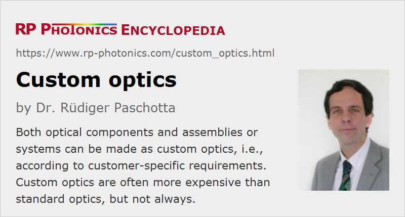

Custom Optics
Definition: optical elements made according to customer-specific specifications
German: maßgefertigte Optik, Optik nach Maß
How to cite the article; suggest additional literature
Author: Dr. Rüdiger Paschotta
This article covers both custom optical elements and custom optical assemblies or systems – beginning with the former.
Many optical elements such as lenses, laser mirrors, prisms and diffraction gratings are fabricated as standard parts, i.e., they are made with the same specifications for many different customers. Often, they are even available from stock, i.e., manufactured even before concrete orders are coming in. However, this concept would not work for very special parts, which need to be specifically designed and produced for individual customers. They can be called custom optical elements. The same considerations apply to other parts like laser crystals and optical fibers.
Some examples for custom optical elements are:
- prisms with special forms, fitting into special housings for compact optical setups
- custom dichroic mirrors, dielectric coatings and optical filters with very special specifications, e.g. involving unusual optical wavelengths (e.g. in the area of infrared optics) or special geometrical shapes
- optical fibers with special combinations of parameters like core size, numerical aperture, outer diameter, or with special optical glass or coating materials or unusual core shapes
- composite laser crystals with special dopants and doping profiles, geometric shapes etc.
Note that a supplier may have parts on stock which are not listed in their product catalogue, e.g. because the available quantities are too small, or the parts are going to be phased out. Therefore, the absence of parts and catalogues does not prove that stock optics are required.
Turning Stock Optics into Custom Optics
Custom optical elements are sometimes fabricated not “from scratch”, but rather by applying additional processing steps to custom elements; some typical examples are:
- Custom coatings: uncoated lenses may be kept on stock in order to equip them with custom coatings later on.
- Surface figure improvement or surface modification: uncoated standard spherical lenses may be upgraded for higher precision or even turned into aspheric lenses by removing parts of their surfaces.
- Modification of dimensions: one may e.g. remove some outer parts without affecting the optical performance, such that an optical element fits into a predefined mount.
Sorted Optics
Optical elements are often fabricated with an accuracy which surpasses the usually required specifications e.g. in terms of wavefront error, centration or coating performance. A manufacturer may then identify those individuals which would adhere to stricter specifications and sell them as custom precision parts.
Custom Optical Systems
More complex optical arrangements, consisting of multiple optical elements, are also available in standard versions (e.g. as on-stock microscope or camera objectives) or alternatively as custom versions. The latter may or may not require custom optical elements. In many cases, it is sufficient to appropriately combine available standard optical elements to obtain the required custom optical setup.
Some manufacturers offer custom optical components only, while others offer optical assemblies or systems, based on components from own production or from other sources.
Examples for custom optical systems:
- special objectives for infrared cameras or inspection systems
- laser beam delivery systems for given beam diameters, wavelengths, focusing requirements etc., possibly also with given outer dimensions and a mechanical interface to a certain laser device
- endoscopes for medical applications
- spectrometers for applications like optical coherence tomography or optical sensors
Besides optical components, such systems usually contain some opto-mechanics, e.g. precise holders, possibly with adjustment screws and the like.
The more essential parameters an optical component or assembly has, the less likely it is that standard parts or assemblies can provide a satisfactory solution. For example, an optical lens has only few essential parameters such as focal length, numerical aperture and usable wavelength range, so that one can often use standard lenses from stock, if there are no special requirements (e.g. for aspheric optics). On the other hand, rare-earth-doped fibers have many essential parameters such as core radius, numerical aperture, pump cladding shape and size (for double-clad fibers), doping concentration of the fiber core, details of chemical compositions etc. There may just be too many dimensions of the space in which such items can be arranged; therefore, from-stock fibers often do not perfectly fulfill requirements.
Using Standard vs. Custom Optics
Obviously, it is advantageous in some respects to work with standard components and assemblies only:
- They are in most cases substantially cheaper, providing better value for money.
- They can be obtained more quickly (low lead times), possibly even from stock.
- They have possibly been tested more thoroughly.
Therefore, an optical designer will usually try to work with standard components only. However, custom optical elements and arrangements are required in many cases because an application can work only with them. Due to the higher cost and longer waiting times, it is then particularly important to very carefully work out designs, minimizing the risk that the system does not work and custom elements or arrangements need to be modified again, incurring high additional cost and long time delays. For example, one may use optical design software for comprehensive tests, which involve not only the basic optical functions but also the effects of fabrication tolerances.
The differences between custom optics and standard optics concerning price, delivery times etc. depend on the production volumes. While the disadvantages of custom optics may be severe when using only small volumes, the difference can be much smaller in high-volume applications. One may sometimes even reduce production cost with custom optics, since the design can exactly address the concrete requirements, omitting any features which are not actually required.
In some cases, one largely uses stock optics for prototyping of optical setups, accepting certain performance limitations, and later on partly uses custom optics for final development and mass production. That way, the development time and cost may be reduced. However, some uncertainties may be introduced by later changes of optical components, so that additional tests and possibly refinements are required.
Cost Models for Custom Optics
Particularly in cases where large production volumes are not guaranteed from start, manufacturers may apply special cost models involving non-recurring initial charges. This is because there are often substantial initial expenses for the manufacturer, which need to be recovered, and may not be recovered without additional initial charges:
- design cost: calculating a suitable optical layout, checking tolerances, developing the required opto-mechanics etc.
- tooling cost: applies if special tools need to be made for production
- work for refining specifications, possibly analyzing details of the intended application, etc.
Alternatively, a manufacturer may simply quote a low number of items at a relatively high price and later larger numbers at a substantial lower per-item price.
A manufacturer may be tempted to quote relatively low non-recurring charges, hoping to acquire later large orders later on, but then also facing the risk of working on non-economical conditions. The desired large volumes may not materialize even due to completely external and not foreseeable reasons.
The cost of custom optics can substantially depend on the strictness of specifications (see below), but also on the accepted lead time.
Custom Optics Specialists
Some suppliers are specialized on producing custom objects, often only in specific fields such as lenses, prisms or aspheric optics. A specialist in a certain area can often produce custom optics at more competitive prices and/or with better performance than a generalist. This may not only be due to specialized experience, but also because specialized machinery and tools are ready to be used.
Custom Optical Assemblies as OEM Parts
Custom optical assemblies are often provided as OEM parts (Original Equipment Manufacturing). An OEM manufacturer may provide such assemblies to a system integrator, who integrates them into larger devices. The manufacturer may take over not only the responsibility for producing the assemblies, but also some additional responsibilities:
- designing the assemblies
- ensuring quality control (including that for optical components procured elsewhere) concerning optical performance, environmental fortitude and possibly other aspects, using sophisticated instruments for optical characterization and delivering reliable compliance reports and other documentation
- keeping certain numbers in stock for avoiding delivery bottlenecks
- supporting personnel of the integrator in certain aspects
Contractual arrangements may also require that designs are kept confidential and no other customers are served with a certain range of custom products.
Specifications for Custom Optics
When custom optics are ordered, it is particularly essential to agree with the manufacturers on comprehensive and precise specifications. These can be related to a substantial number of aspects:
- optical parameters like focal length, numerical aperture, field of view, reflectance etc.
- precision, tolerances e.g. for wavefront errors
- geometric dimensions (e.g. if parts must fit into some given holders)
- properties of coatings (e.g. anti-reflection coatings)
- optical damage threshold (particularly for pulsed laser applications)
- used optical materials (ROHS compliant?)
Adequate tolerancing – based on accurate calculations involving the real requirements rather than only a “gut feeling” – can be essential not only for obtaining the required performance but also for keeping the cost reasonably low by avoiding over-tolerancing. This is of course most important in cases with large production volumes.
It can also be very helpful e.g. to use only certain preferred curvature radii, for which suitable manufacturing tools are existing already.
Manufacturers for custom optics are often prepared to assist in the process of refining specifications. It is in their own interest to obtain clear specifications, avoiding any misunderstanding. Besides, they often have a more detailed knowledge of fabrication details influencing the cost or performance details which may cause problems after integration.
Suppliers
The RP Photonics Buyer's Guide contains 122 suppliers for custom optics. Among them:
Questions and Comments from Users
Here you can submit questions and comments. As far as they get accepted by the author, they will appear above this paragraph together with the author’s answer. The author will decide on acceptance based on certain criteria. Essentially, the issue must be of sufficiently broad interest.
Please do not enter personal data here; we would otherwise delete it soon. (See also our privacy declaration.) If you wish to receive personal feedback or consultancy from the author, please contact him e.g. via e-mail.
By submitting the information, you give your consent to the potential publication of your inputs on our website according to our rules. (If you later retract your consent, we will delete those inputs.) As your inputs are first reviewed by the author, they may be published with some delay.
See also: optical fabrication, prisms, mirrors, laser mirrors, lenses, diaphragms, diffraction gratings, infrared optics, optical materials
and other articles in the category general optics
|  |
If you like this page, please share the link with your friends and colleagues, e.g. via social media:
These sharing buttons are implemented in a privacy-friendly way!